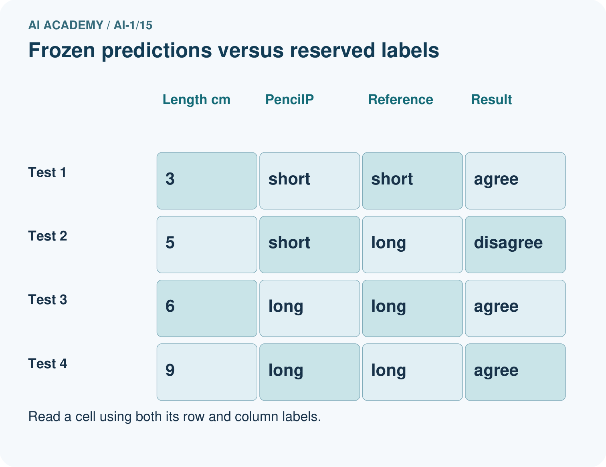
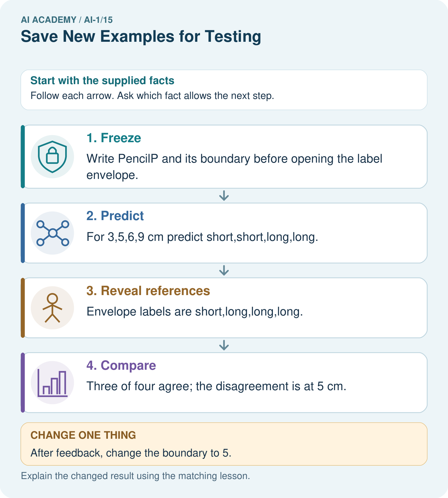
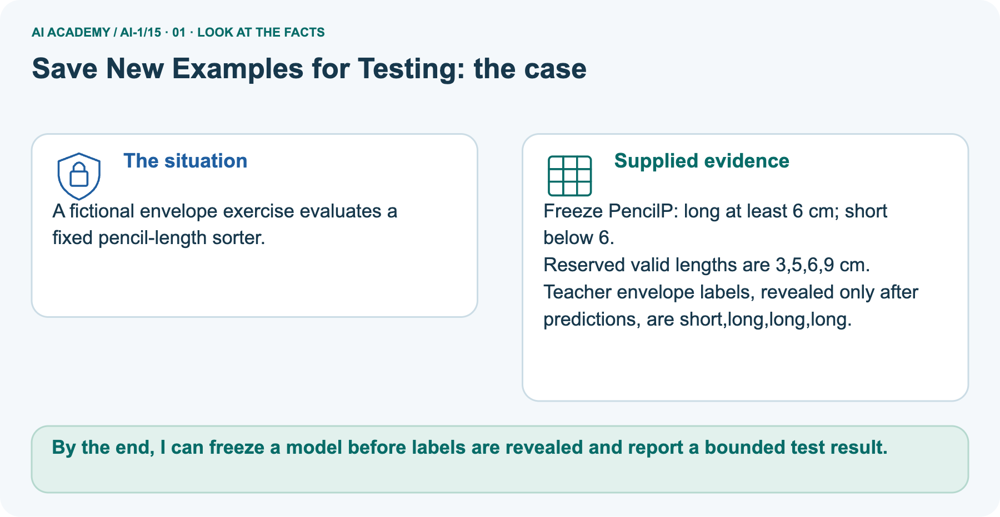
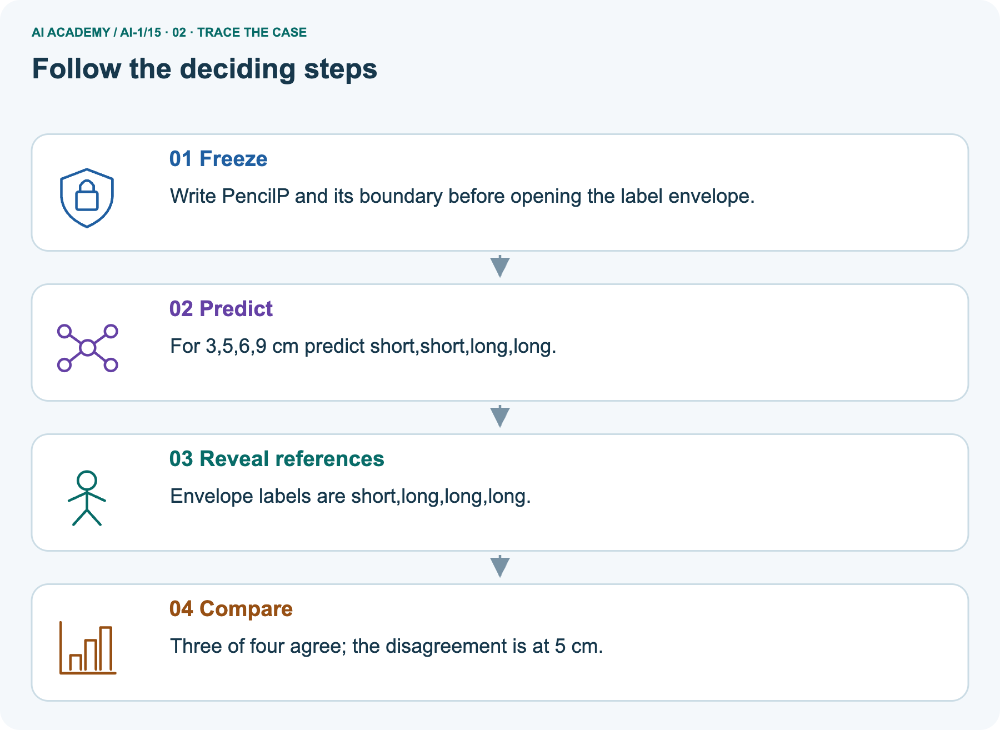
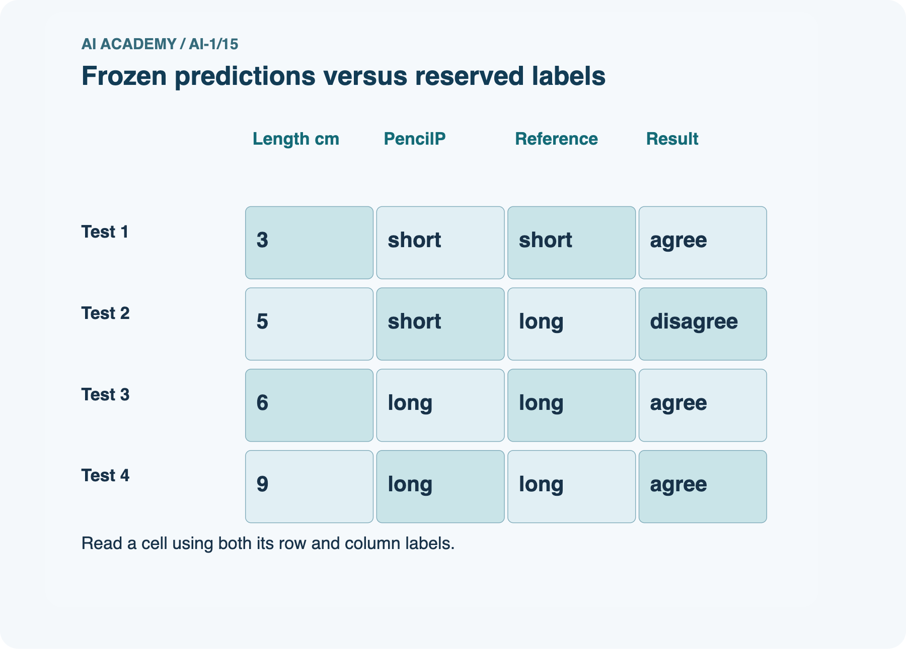
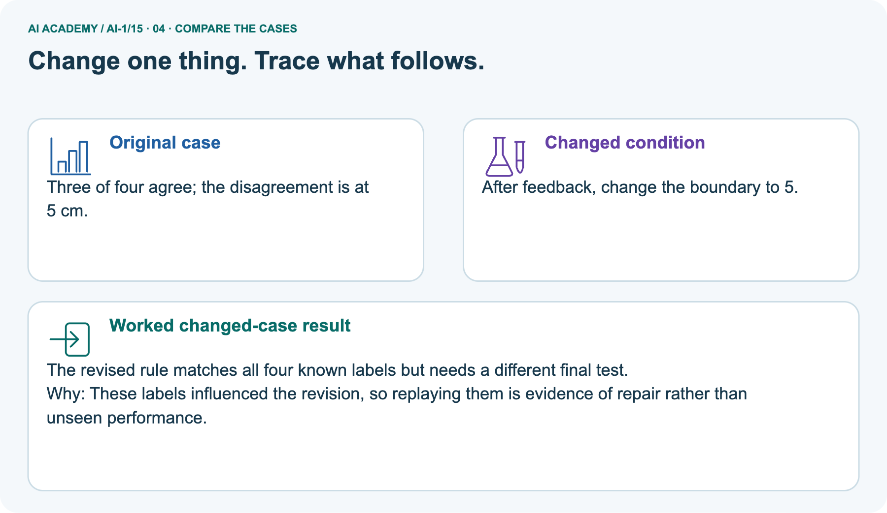
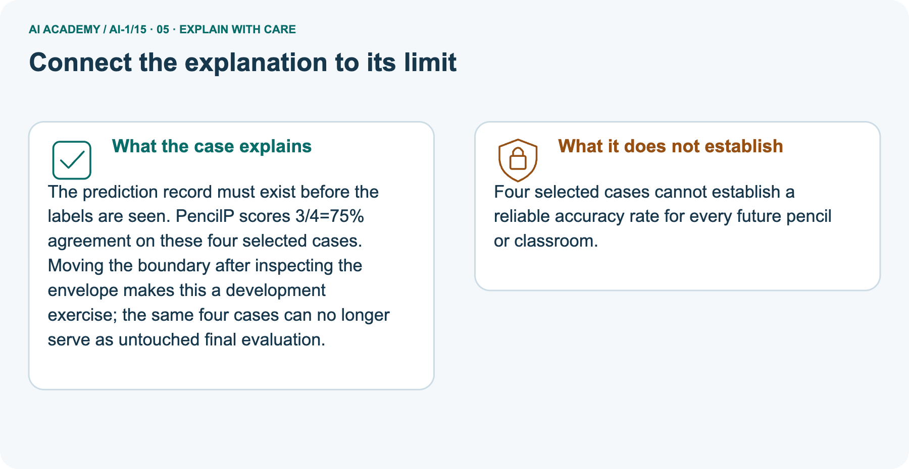
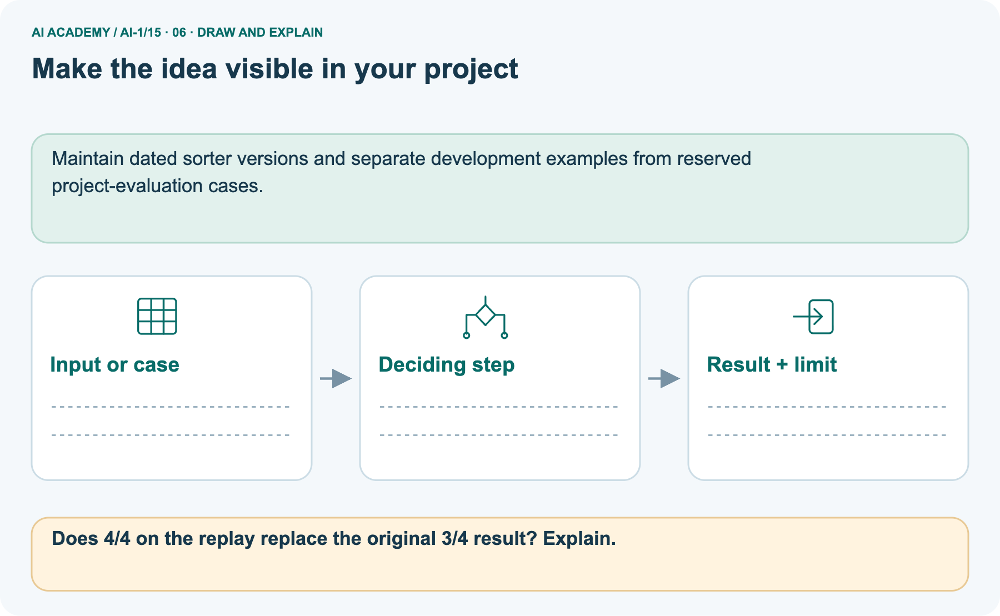

AI Academy · Level 1 · Grade 6 · Week 15 · Workbook
Save New Examples for Testing
Learn to understand, design, build, test and explain AI systems responsibly.
Project: Helpful Classroom Sorter
Workbook · 1 of 21
Recall and choose your starting point
Record your starting explanation for Save New Examples for Testing before opening notes. Show any later correction separately.
Try the recall before opening notes. Then use a different colour or a labelled second line to correct your explanation.
Build a Human Classifier
Without opening the old lesson, explain one key idea from Build a Human Classifier. Give an example and a mistake that the idea helps you avoid.
Debug the Cause
Without opening the old lesson, explain one key idea from Debug the Cause. Give an example and a mistake that the idea helps you avoid.
Algorithms as Recipes
Without opening the old lesson, explain one key idea from Algorithms as Recipes. Give an example and a mistake that the idea helps you avoid.
Workbook · 2 of 21
Practise with fading help
Complete the supported Save New Examples for Testing trace and record the first step you can explain without help.
Use W2: Preserve the original result for Keeping final tests unseen. Record the answer once; the lesson and workbook refer to the same attempt.
| Given inputs | Procedure I chose | Middle steps | Result and check |
|---|---|---|---|
Workbook · 3 of 21
Individual reasoning check
Check the proposed Save New Examples for Testing explanation against the supplied facts before discussing it.
Use the worked case for Keeping final tests unseen. Proposed explanation: “A new file makes old records unseen”. Decide whether this explanation is supported.
Point to the step or supplied fact that decides; explain your repair if needed.
Workbook · 4 of 21
Independent transfer case
Write one first attempt at the reserved independent case before feedback. Repeated copies of that case refer to the same recorded attempt.
Independent case: Run a separate ribbon experiment
Before receiving any test labels, freeze RibbonA: whole cm lengths 1 through 12, long at least 6 cm and short otherwise. Save predictions for 5, 7, 9 and 11 cm.
Ask your teacher to reveal the reserved labels, then record agreements, disagreements and a limited result statement.
If you later choose threshold 8 after seeing these labels, explain how you must describe its result on the same records.
Attempt this case before feedback. Record any help. Earlier examples below are further practice; a case already practised with feedback cannot establish fresh transfer.
Workbook · 5 of 21
Your learning target
Connect the Save New Examples for Testing target to a trace and a justified conclusion.
Eight cards are used to invent a rule. Four sealed cards are then opened; the team changes its rule after seeing errors. Can those four cards still be called an untouched final test? Plan what to do next.
Workbook · 6 of 21
Solve the given case
Solve the supplied Save New Examples for Testing case and show the deciding evidence.
Cards A–F are used for practice. G and H remain sealed.
Which can provide a fresh test, and under what condition?
Show your trace, calculation or evidence
Workbook · 7 of 21
Check a changed case
Apply the procedure to the changed case and record why the conclusion follows.
You teach a sorter using cards A, B and C. You keep D and E unseen. Which cards provide the fairer first test? What changes if you show D during teaching?
My independent answer and reason
Week 15 Test and reflect
Workbook · 8 of 21
Design a revealing test
Specify a changed input, expected result and observation separately.
Create a changed input, boundary case or missing-information case. Write the expected answer or safe response before testing.
| Test record | My evidence |
|---|---|
| Changed input or condition | |
| Expected answer or fallback | |
| Observed result | |
| Why the result occurred |
Workbook · 9 of 21
Project checkpoint
Justify what Save New Examples for Testing adds to Helpful Classroom Sorter and keep the evidence.
Create separate learn and test envelopes for the Classroom Sorter and label who may open each.
The project change and evidence I will keep
Workbook · 10 of 21
Self check
Judge explanation, evidence, transfer and limits separately; attach the work behind your judgement.
- I can explain the mechanism.
- I can show evidence.
- I can handle a changed case.
- I can name a limit.
Mark each as not yet, with help or independently, and attach supporting work.
Teacher review ____________________ Next step ____________________
Workbook · 11 of 21
Transfer practice from the original programme
Use this earlier case as transfer practice. A case already discussed with feedback is not fresh assessment evidence.
Eight cards are used to invent a rule. Four sealed cards are then opened; the team changes its rule after seeing errors. Can those four cards still be called an untouched final test? Plan what to do next.
Record support used: none, hint or teacher explanation.
Workbook · 12 of 21
W1 Assign the evidence its role
Assign the evidence its role. Apply the supplied Save New Examples for Testing facts and keep your reasoning.
For each event, state whether examples are being used for development or independent evaluation of a fixed model: comparing candidates on fitting labels; scoring a frozen model on previously reserved examples once; changing a threshold after reading a test score.
Explain your last choice.
Workbook · 13 of 21
W2 Preserve the original result
Preserve the original result. Apply the supplied Save New Examples for Testing facts and keep your reasoning.
TowerA uses threshold 5 on reserved heights 3, 5, 7 and 9 cm. The labels are short, short, tall and tall. Write its predictions, agreements and disagreement.
Then state why TowerB with threshold 6, selected after seeing these labels, cannot claim four independent test successes on these same records.
Workbook · 14 of 21
W3 Detect a less visible leak
Detect a less visible leak. Apply the supplied Save New Examples for Testing facts and keep your reasoning.
A team leaves reserved labels out of its fitting table but tries six rules and reads a test score for each. It chooses the highest-scoring rule. Explain how information still reached model selection.
Would renaming or reordering the same test records repair the problem?
Workbook · 15 of 21
W4 Run a separate ribbon experiment
Attempt before feedback. If this repeats the selected independent case, reuse that first attempt; otherwise keep a separate record. Run a separate ribbon experiment. Apply the supplied Save New Examples for Testing facts and keep your reasoning.
Before receiving any test labels, freeze RibbonA: whole cm lengths 1 through 12, long at least 6 cm and short otherwise. Save predictions for 5, 7, 9 and 11 cm.
Ask your teacher to reveal the reserved labels, then record agreements, disagreements and a limited result statement.
If you later choose threshold 8 after seeing these labels, explain how you must describe its result on the same records.
Workbook · 16 of 21
W5 Audit a proposed final set
Audit a proposed final set. Apply the supplied Save New Examples for Testing facts and keep your reasoning.
A class reserves ten copies of one easy development example in a new file. The model agrees with all ten labels.
Explain two reasons this gives weak evidence about new cases, and propose a better final evaluation plan without promising perfect future performance.
Workbook · 17 of 21
Feedback, return check and learning record
Record the first repaired step and a different case to revisit after a delay.
| Evidence | My record |
|---|---|
| Worked alone / hint / model | |
| First step I repaired and why | |
| New case checked later; date and result | |
| What I can now explain without notes | |
| One remaining question |
Revisit this idea with your teacher after a delay. Familiarity is different from explaining and using it on a changed case.
Workbook · 18 of 21
Pictorial case practice: Save New Examples for Testing
A fictional envelope exercise evaluates a fixed pencil-length sorter. Explain the labelled step before checking the changed condition.
A fictional envelope exercise evaluates a fixed pencil-length sorter.
Freeze PencilP: long at least 6 cm; short below 6.
Reserved valid lengths are 3,5,6,9 cm. Teacher envelope labels, revealed only after predictions, are short,long,long,long.


Does 4/4 on the replay replace the original 3/4 result? Explain.
Record the help used
Support used: alone / hint / worked example. This record is practice evidence.
Project connection: Maintain dated sorter versions and separate development examples from reserved project-evaluation cases.
Workbook · 19 of 21
Project portfolio milestone
Keep this week’s input, deciding step, result and limit together in the Helpful Classroom Sorter record.
Project: Helpful Classroom Sorter
Current milestone: Test changed cases. Keep normal, boundary and failure cases; compare expected and observed results.
Maintain dated sorter versions and separate development examples from reserved project-evaluation cases.
| Evidence to keep | My record |
|---|---|
| This week’s input and deciding step | |
| Prediction and actual result (or labelled paper trace) | |
| One change since the previous checkpoint and why | |
| One error or limit and the next test |
Workbook · 20 of 21
Supported practice and learning evidence
Try the supported questions before comparing with hints and feedback. Record what you repaired and the evidence you retained.
Use this supported practice once, in the browser or on paper. Keep the reserved independent assessment for a separate first attempt before teacher feedback.
A fictional envelope exercise evaluates a fixed pencil-length sorter.
Practice 1: explain the deciding evidence
Which labelled step matches this detail? Three of four agree; the disagreement is at 5 cm.
1. Reveal references
2. Compare
3. Freeze
4. Predict
Hint · try first
Hint if needed: Read the steps in the pictorial case. Match the supplied detail to the stage that performs or records it.
Feedback · compare after trying
After your attempt, compare with the supported explanation: Compare Three of four agree; the disagreement is at 5 cm. The prediction record must exist before the labels are seen.
PencilP scores 3/4=75% agreement on these four selected cases. Moving the boundary after inspecting the envelope makes this a development exercise; the same four cases can no longer serve as untouched final evaluation.
Practice 2: explain the deciding evidence
Changed case · predict first
Changed-case practice: After feedback, change the boundary to 5. Which conclusion is supported by the supplied facts?
1. The revised rule matches all four known labels but needs a different final test.
2. We can decide the result without examining the changed input or the procedure.
3. This one example guarantees correct results for every future input.
Hint · try first
Hint if needed: Use the changed condition and the deciding step in the pictorial trace. The answer must say what follows from those facts.
Feedback · compare after trying
After your attempt, compare with the supported explanation: The revised rule matches all four known labels but needs a different final test.
These labels influenced the revision, so replaying them is evidence of repair rather than unseen performance.
Repair a missing building block
Review Build a Human Classifier (ai-1/14). Goal: Construct a classifier with a stated input format, selected rule and recorded output.
Short practice: Trace 0 cm and explain why clarification is different from predicting short.. Return to this week and explain what you changed.
Review Debug the Cause (ai-1/12). Goal: Compare expected and observed traces to locate the first difference. Short practice: Propose input 0 and give both predicted outputs without inventing an observed result..
Return to this week and explain what you changed.
Review Algorithms as Recipes (ai-1/9). Goal: Trace an ordered algorithm using the current value after every instruction. Short practice: Use the arrows to explain where the two zero-start runs first differ..
Return to this week and explain what you changed.
Keep your completed work
Use Download completed work in the hosted lesson to export your answers, reflections, practice feedback and code-run evidence. Open the HTML copy to read or print it.
Drafts stay in this browser when storage is available; clear drafts on a shared device.
Workbook · 21 of 21
Visual concept journey
Explain each Save New Examples for Testing picture from its labels, then record a relevant limit.
01. Save New Examples for Testing: the case

A fictional envelope exercise evaluates a fixed pencil-length sorter. Supplied facts: Freeze PencilP: long at least 6 cm; short below 6. Reserved valid lengths are 3,5,6,9 cm.
Teacher envelope labels, revealed only after predictions, are short,long,long,long.
Point to the given fact that matters most. Explain why it matters.
02. Follow the deciding steps

Freeze: Write PencilP and its boundary before opening the label envelope. → Predict: For 3,5,6,9 cm predict short,short,long,long. → Reveal references: Envelope labels are short,long,long,long. → Compare: Three of four agree; the disagreement is at 5 cm.
Point to each numbered stage and explain which recorded input it uses.
03. Frozen predictions versus reserved labels

Frozen predictions versus reserved labels. Test 1: Length cm = 3, PencilP = short, Reference = short, Result = agree. Test 2: Length cm = 5, PencilP = short, Reference = long, Result = disagree.
Test 3: Length cm = 6, PencilP = long, Reference = long, Result = agree. Test 4: Length cm = 9, PencilP = long, Reference = long, Result = agree.
Read the labels and values. Explain the relationship the model shows.
04. Change one thing. Trace what follows.

Original case: Three of four agree; the disagreement is at 5 cm. Changed condition: After feedback, change the boundary to 5. Expected result: The revised rule matches all four known labels but needs a different final test.
Reason: These labels influenced the revision, so replaying them is evidence of repair rather than unseen performance.
Predict before checking the worked changed-case result. Name what changed and what the supplied facts allow you to conclude.
05. Connect the explanation to its limit

The prediction record must exist before the labels are seen. PencilP scores 3/4=75% agreement on these four selected cases.
Moving the boundary after inspecting the envelope makes this a development exercise; the same four cases can no longer serve as untouched final evaluation.
Limit: Four selected cases cannot establish a reliable accuracy rate for every future pencil or classroom.
Explain the case, then point to a limit on the claim.
06. Make the idea visible in your project

Maintain dated sorter versions and separate development examples from reserved project-evaluation cases. Draw your input, deciding step, result and limit.
Supported question: Does 4/4 on the replay replace the original 3/4 result? Explain.
Draw your project trace and justify the deciding step using evidence.